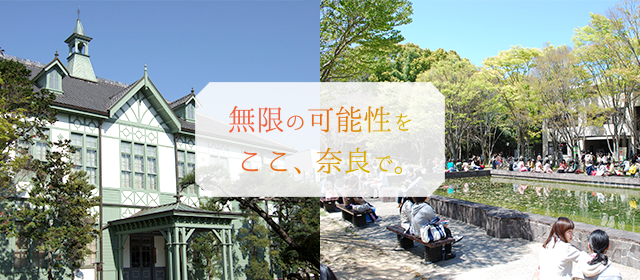
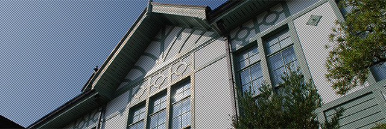
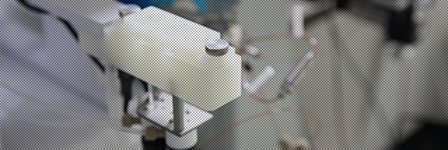
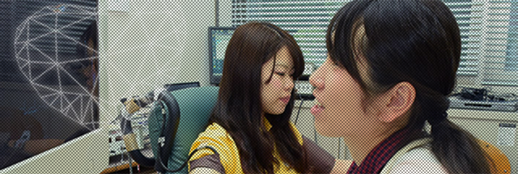
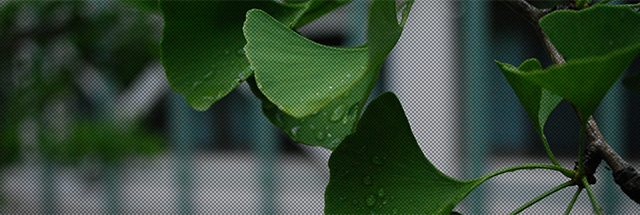
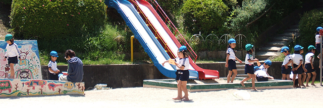
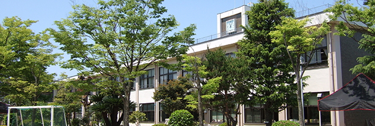
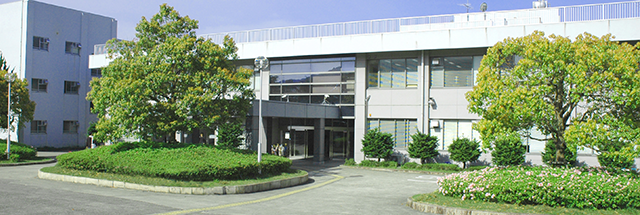

学部/学科

文学部
奈良女子大学文学部は、質の高い教養教育と高度な専門教育を通して、人間・文化・社会への深い理解力や多様な言語能力を培い、今までの知の枠組みに囚われない柔軟な視点から自分で課題を発見し解決に取り組む積極的な人材の育成を目指しています。

理学部
奈良女子大学理学部は、優秀な教授陣による高いレベルの理学の教育を行います。これにより、社会の様々な問題を解決する能力を持った学生を育成します。女性が学び研究しやすい環境で、自律的な活動を通して次世代の課題にリーダーとして取り組むことのできる教養豊かな女性を社会に輩出することが本理学部の使命です。

生活環境学部
奈良女子大学生活環境学部は、私たちの生活と人間生活を取り巻く環境について科学的に分析し、安全で豊かな生活を創造することを目指しています。私たちの生活環境は大きく変化しており、広い視野の思考力と高い専門性が求められています。そこで衣食住と情報通信および生活文化に加え、社会のニーズに応える教育研究を行なっています。

大学院人間文化総合科学研究科
奈良女子大学人間文化総合研究科は、文学部、理学部、生活環境学部という３つの学部にまたがって１研究科として設置されており、博士前期課程（いわゆる修士課程）と博士後期課程(いわゆる博士課程)の区分があります。

付属幼稚園

付属小学校

付属中学校